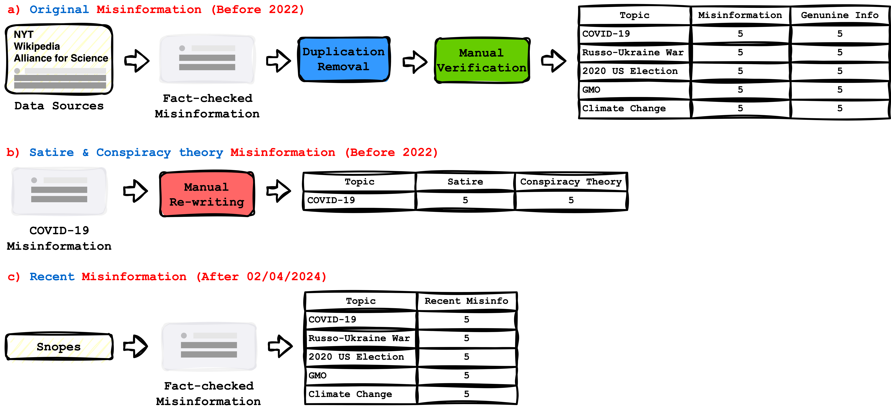

Data Preparation
The study gathered verified misinformation on COVID-19, the Russo-Ukraine war, the 2020 US election, GMOs, and climate change from reputable sources like The New York Times, Wikipedia, and the Alliance for Science, each with a correction to create an authentic information corpus. COVID-19 misinformation was also rephrased into satire and conspiracy theory styles by a domain expert to explore susceptibility to these formats. Additionally, recent misinformation fact-checked by Snopes was included to assess the system’s ability to handle unfamiliar misinformation, ensuring robustness and validation for both human and model-based evaluations.

The construction process of (a) an \ul{original fact-checked misinformation \& genuine information dataset}, (b) a \ul{COVID-19-related satire \& conspiracy theory dataset}, and (c) a \ul{recent misinformation dataset} containing misinformation fact-checked on Snopes after 02/04/2024. The number of (mis)information pieces under each category is also displayed.